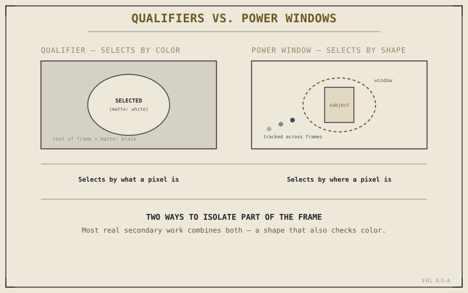

Chapter 9.4 closed on primary correction's real limitation: it treats every pixel in the frame identically. Most of the grading work that actually shows up in a finished shot doesn't want that — it wants to brighten a face without touching the wall behind it, or deepen a sky without darkening a similarly blue shirt below it. That's secondary correction, built on two tools that isolate part of an image instead of all of it: qualifiers, which select by what a pixel is, and power windows, which select by where a pixel is.
Why "Whole Frame" Stops Being Enough
A shot can be exposed and color-balanced correctly overall, by every measure Chapter 9.2's scopes can check, and still have a specific problem no primary wheel can fix without breaking something else — skin that's slightly too warm while the background reads fine, a sky that's flat and needs more punch without crushing the midtones beneath it. Reaching for Lift, Gamma, or Gain in this situation means trading one problem for another, because those tools have no concept of "just this part of the image." Secondary correction exists specifically to give a grade that concept.
Qualifiers: Isolating by Color
A qualifier selects pixels based on their color and luminance values, typically by sampling a point in the image with an eyedropper and then refining the selection with hue, saturation, and luminance range controls until it catches what you want and excludes what you don't. The result is a matte — a grayscale map where white means fully selected, black means fully excluded, and gray in between means partially selected, softening the edge of the isolation rather than leaving a hard, visible boundary. Any correction applied downstream of a qualifier only affects the area that matte defines, wherever that color happens to appear across the frame, however many separate regions it's scattered across.
Power Windows: Isolating by Shape
A power window works from the opposite direction, selecting by position and shape rather than color. It's a soft-edged geometric region — a circle, an ellipse, a custom curved shape — placed over part of the frame, with everything inside it selected and everything outside it excluded, regardless of what color either area happens to be. Power windows can also be tracked, following a moving subject frame by frame so the isolation stays locked to, say, a face as it moves through the shot rather than sitting fixed in one place while the subject moves out from under it.

Most real secondary work combines both — a shape that also checks color.
A qualifier asks "what is this pixel?" A power window asks "where is this pixel?" Neither question is more fundamental than the other — most real isolation work needs both answered at once.
Combining Both, and Where This Fits the Graph
In practice, qualifiers and power windows are frequently combined on a single node: a power window constrains a qualifier's selection to one region of the frame, preventing it from catching the same color wherever else it might appear — a sky qualifier restricted to the upper half of the frame so it doesn't also grab a blue car parked below it. This is the concrete version of the parallel branch Chapter 9.3 described: a secondary node like this typically sits off to the side of the main correction chain, isolating and adjusting its own narrow slice of the image independently, before a combine node brings its result back together with everything else. Secondary correction doesn't replace the primary pass from Chapter 9.4 — it refines specific, chosen parts of an image that's already been broadly corrected, which is exactly why it comes second.
Key Concepts to Remember
- Secondary correction isolates part of a frame for adjustment, filling the gap primary correction leaves by touching every pixel equally.
- A qualifier selects by color and luminance, producing a soft-edged grayscale matte wherever that value appears in the frame.
- A power window selects by position and shape, and can be tracked to follow a moving subject through a shot.
- Combining a window with a qualifier constrains selection by both what a pixel is and where it is — often on a parallel node, as Chapter 9.3 described.
Cross-References Forward
| → Ch. 9.6 | Color Matching Across Cameras and Shots — where primary and secondary correction both get applied to a specific, everyday task. |
| → Ch. 9.3 | Revisit the node graph's parallel branch, the structure secondary correction nodes typically occupy. |
| → Ch. 9.4 | Revisit primary correction, the broad foundation secondary correction refines rather than replaces. |